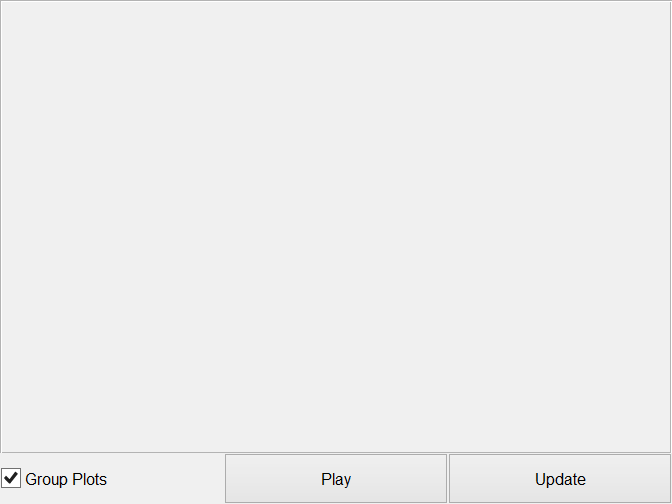
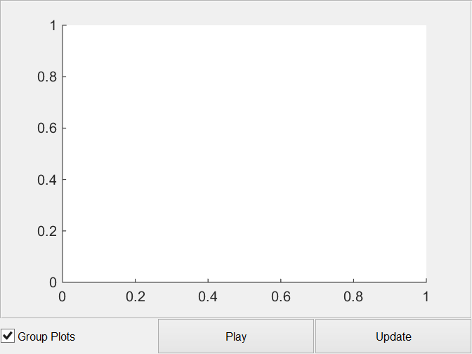

Contents
classdef plot_audio_ui < handle
Panel Plot Audio Signals Class
PLOT_AUDIO_UI Holds the gui elements for the audio signals panel
PLOT_AUDIO_UI() create ui in new figure PLOT_AUDIO_UI(PARENT) create ui in parent panel PLOT_AUDIO_UI(PARENT, MAINOBJ) create ui with handle to main object
Example 1: obj = plot_audio_ui
Example 2: Parent = figure obj = plot_audio_ui(Parent)
PLOT_AUDIO_UI Methods: plot_audio_ui - Constructor pbUpdate_Callback - Update channel names pbPlay_Callback - Play selected audiodata graphicsCode - Graphics Generation Code
PLOT_AUDIO_UI Properties: Parent - Handle of panel to place ui in MainObj - Handle of main object Name - Name of UI NChan - Number of channels GroupPlots - Boolean for whether to group the plots to one axis Axes - Handle of axis Lines - Hanlde of plot UI - Cell UIs for the options Update - Update callback handle Tag - Tag to find object
Written for the BSc graduation project Acoustic Enhancement via Beamforming Using Smartphones.
Team: S. Bosma R. Brinkman
T. de Rooij R. Smeding
N. van Wijngaarden E. Wouters
Supervisor: Jorge Martínez Castañeda
Contact: E.H.Wouters@student.tudelft.nl
See also BF_DATA, MAIN_WINDOW
Properties
properties
Parent % Handle of parent
MainObj % Handle of main object
Name = 'Plot Audio Signals'; % Name of UI
NChan = 0; % Number of channels
GroupPlots = 1; % Boolean for whether to group the plots to one axis
Axes % Handle of axis
Lines % Hanlde of plot
UI % Cell UIs for the options
Update % Update callback handle
Tag = 'plot_audio_ui'; % Tag to find object
end
Methods
methods
Plot Audio Signals Constuctor
function obj = plot_audio_ui(parent, mainObj)
% Parse Input % figure Handle if nargin == 0 obj.Parent = figure('Name',obj.Name,'NumberTitle','off','resize','on'); elseif nargin >= 1 if ishandle(parent) obj.Parent = parent; else warning(['First argument needs to be a handle,'... 'new figure created.']); obj.Parent = figure('Name',obj.Name,'NumberTitle','off','resize','on'); end end if nargin >= 2 obj.MainObj = mainObj; else obj.MainObj.DataBuffer = bf_data(obj.MainObj); obj.MainObj.UI.PlotSettings = std_selector_ui(figure,obj.MainObj); obj.MainObj.DataBuffer.setNChan(1); obj.MainObj.DataBuffer.setTotalSamples(48000); end % Graphics Code obj.UI = obj.graphicsCode(); % Link handle of update callback obj.Update = @obj.pbUpdate_Callback; % Debug % assignin('base','obj',obj)
Plot Code
obj.Axes{1} = axes('Parent',obj.UI.PanPlots);
obj.Lines(1) = line('XData', [], 'YData', [], 'Parent',obj.Axes{1});
 end
ans =
plot_audio_ui with properties:
Parent: [1x1 Figure]
MainObj: [1x1 struct]
Name: 'Plot Audio Signals'
NChan: 0
GroupPlots: 1
Axes: {[1x1 Axes]}
Lines: 11.0004
UI: [1x1 struct]
Update: @(varargin)obj.pbUpdate_Callback(varargin{:})
Tag: 'plot_audio_ui'
Button Update Callback
function pbUpdate_Callback(obj,~,~) if obj.MainObj.DataBuffer.IsInitialized yData = obj.MainObj.DataBuffer.getAudioData(obj.MainObj.UI.PlotSettings.ChanNames); if ~isempty(yData) xData = (1:length(yData))'/obj.MainObj.DataBuffer.Fs; else xData = []; end newNChan = size(yData,2); if obj.GroupPlots ~= obj.UI.cbGroupPlots.Value || obj.NChan ~= newNChan || 1 obj.GroupPlots = obj.UI.cbGroupPlots.Value; obj.NChan = newNChan; if ~isempty(obj.Axes); obj.Axes = []; end if obj.GroupPlots obj.Axes{1} = subplot(1,1,1, 'Parent',obj.UI.PanPlots); colors1 = {'black','blue','green','red','cyan','magenta','yellow'}; for ii = 1:newNChan obj.Lines(ii) = line('XData', xData, 'YData', yData(:,ii),... 'Parent',obj.Axes{1}, 'Color', colors1{mod(newNChan-ii+1,length(colors1))}); end legend(obj.Axes{1},obj.MainObj.UI.PlotSettings.ChanNames); else obj.Axes = []; for ii = 1:newNChan obj.Axes{ii} = subplot(newNChan,1,ii, 'Parent',obj.UI.PanPlots); obj.Lines(ii) = line('XData', xData, 'YData', yData(:,ii),... 'Parent',obj.Axes{ii}); legend(obj.Axes{ii},obj.MainObj.UI.PlotSettings.ChanNames{ii}); end if ~isempty(yData) linkaxes([obj.Axes{:}],'xy'); end end else for ii = 1:obj.NChan set(obj.Lines(ii), 'XData', xData, 'YData', yData(:,ii)); end end if ~isempty(yData) xlim1 = xData(end); ylim1 = max([abs(yData(:));1e-4]); for ii = 1:length(obj.Axes) set(obj.Axes{ii}, 'XLim', [0 xlim1]); set(obj.Axes{ii}, 'YLim', [-ylim1 ylim1]); ylabel(obj.Axes{ii},'Amplitude') end xlabel(obj.Axes{end},'Time (s)') end else warning('Cannot update plot, data buffer is not initialized') end end
Button Play Callback
function pbPlay_Callback(obj,~,~) if obj.MainObj.DataBuffer.IsInitialized firstSample = ceil(max(1,obj.Axes{1}.XLim(1)*obj.MainObj.DataBuffer.Fs)); lastSample = floor(min(obj.MainObj.DataBuffer.TotalSamples,obj.Axes{1}.XLim(2)*obj.MainObj.DataBuffer.Fs)); obj.MainObj.DataBuffer.play(obj.MainObj.UI.PlotSettings.ChanNames, firstSample, lastSample); else warning('Cannot play data, data buffer is not initialized') end end
Plot Audio Graphics Code
function UI = graphicsCode(obj) % GRAPHICSCODE Graphics Code % Plot Audio UI panel m=10;n=3; UI.PanPlots = uipanel(obj.Parent, 'Position',grid2pos([1,1,1,m-1,1,m])); UI.cbGroupPlots = uicontrol(obj.Parent,'Style','checkbox',... 'String','Group Plots','Value',obj.GroupPlots,'Callback',@obj.pbUpdate_Callback,... 'Units','normalized','Position',grid2pos([1,m,1,1,n,m])); UI.pbPlay = uicontrol(obj.Parent,'Style','pushbutton',... 'String','Play','Callback',@obj.pbPlay_Callback,... 'Units','normalized','Position',grid2pos([2,m,1,1,n,m])); UI.pbUpdate = uicontrol(obj.Parent,'Style','pushbutton',... 'String','Update','Callback',@obj.pbUpdate_Callback,... 'Units','normalized','Position',grid2pos([3,m,1,1,n,m])); end
end
end